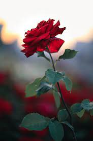
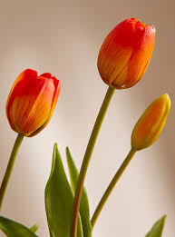

Rose
Roses are popular flowers known for their elegance and fragrance. They come in a wide range of colors and are often associated with love and romance.

Tulip
Tulips are bulbous flowers that symbolize spring and new beginnings. They are available in various colors and have a distinctive shape and appearance.

Sunflower
Sunflowers are large, bright flowers with a sunny and cheerful appearance. They are known for their tall stalks and large, yellow petals.